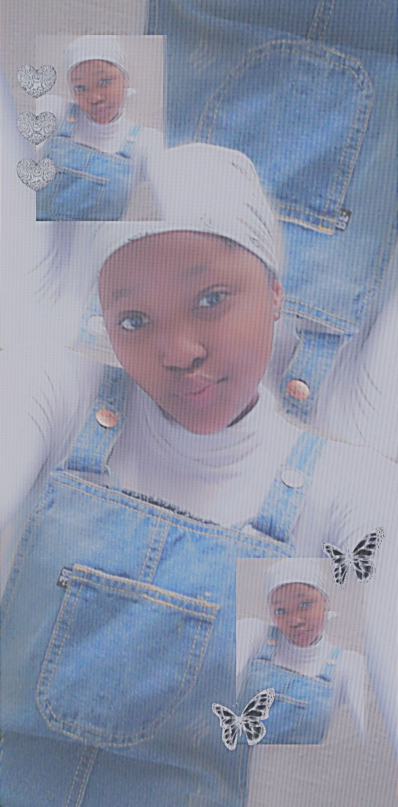
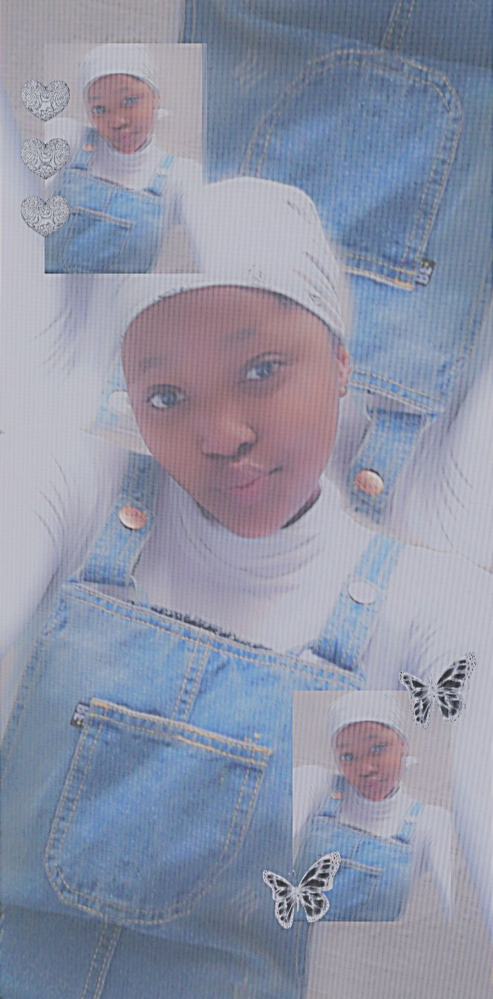

My Story
Kaelo Ntsako Keabetswe Hlabangwane is a 15 year old African female. She toke part in the code like a girl course offered by Vodacom. This course is available to girls between the ages of 14 and 18 in different provinces across South Africa. For more information go to https://www.vodacom.com/news-article.php?articleID=7696.
Kaelo is currently a grade 9 student at Benoni High School. Kaelo has been in the top 10 since grade 8, she was also awarded a top student award for Natural Science in grade 8. Kaelo takes part in several extra murals including cross country, first aid, hockey and is a media monitor leader. She is still deciding on which subjects to pick for grade 10, but she is considering taking life science, physical science and accounting or I.T. For more information on subject choices go to https://www.careerhelp.org.za/content/learner/subject-choice.
In her spare time this brilliant young lady enjoys spending time with her family and friends as well as watching movies and playing board games.Kaelo also enjoys reading. Her current favourite is https://www.goodreads.com/book/show/13214.I_Know_Why_the_Caged_Bird_Sings it is one of the amazing books written by Maya Angelou.
Kaelo is a hard worker and is here to help and uplift the people around her.
Kaelo has many goals and dreams one of them involve getting a bursary or a schoolarship to a medical school in South Africa.
I joined this program because i wanted to explore my options. I rememder when I was in grade 8 i took part in robotics i found it very intresting and exciting. So when I heard about this program I was ready to jump in. I am all about learning new things. I have fallen in love with coding because of this course so I am super grateful for the opportunity and experience.